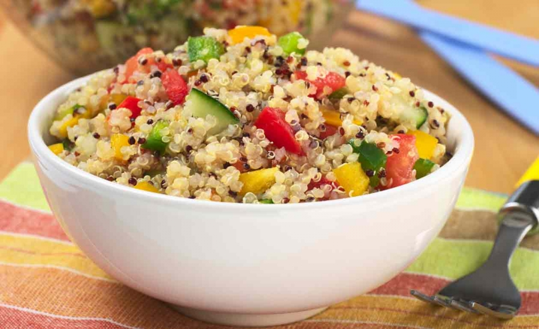

Descrição
A salada de quinoa é uma opção saudável e nutritiva, perfeita para uma refeição leve ou como acompanhamento.
Rica em proteínas e fibras, a quinoa combina bem com uma variedade de vegetais e temperos, tornando-se uma
escolha versátil e saborosa. Esta salada é ideal para quem busca uma alimentação balanceada e cheia de sabor.
Imagem da Salada

Receita
Ingredientes:
- 1 xícara de quinoa
- 2 xícaras de água
- 1/2 pimentão vermelho picado
- 1/2 pepino picado
- 1/2 cebola roxa picada
- 1/4 de xícara de salsinha picada
- Suco de 1 limão
- 3 colheres de sopa de azeite de oliva
- Sal e pimenta a gosto
Modo de Preparo:
- Enxágue a quinoa em água corrente.
- Em uma panela, adicione a quinoa e a água. Cozinhe até que a quinoa fique macia e absorva toda a água (cerca de 15 minutos).
- Deixe a quinoa esfriar.
- Em uma tigela grande, misture a quinoa cozida, o pimentão, o pepino, a cebola roxa e a salsinha.
- Tempere com o suco de limão, azeite, sal e pimenta.
- Sirva fresca ou leve à geladeira antes de servir.